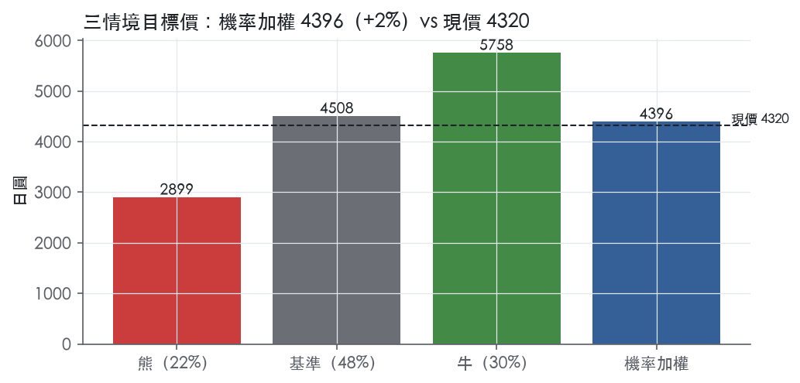
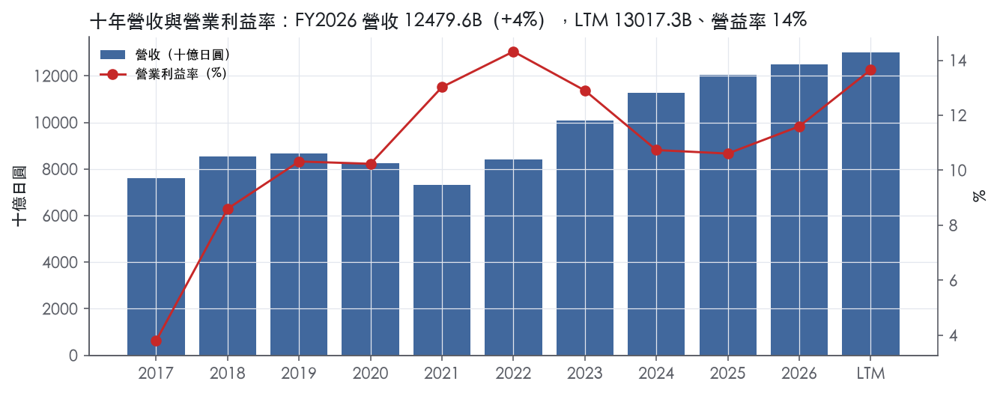
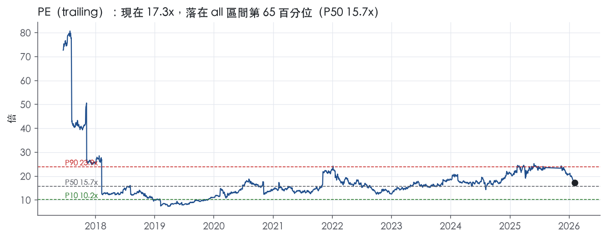
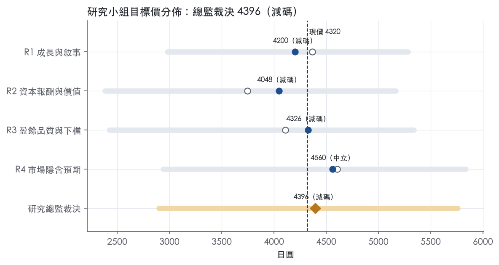
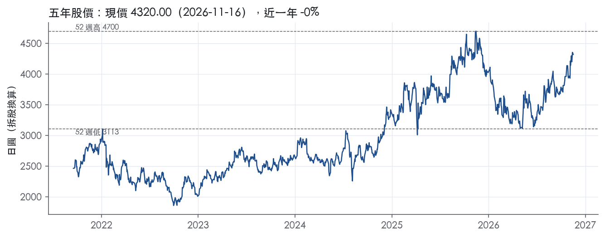

評等總表 › 未分類 › 6758.T
利潤率上修已在價內，倍數略折，中性｜評等 減碼｜目標價 4396
| 報告日 | 評等 | 目標價 | 當時股價 | 超額報酬 |
|---|---|---|---|---|
| 2026-11-16 | 減碼 | 4,396 | 4,320 | -5.4% |
| 評等 | 減碼（邊界，鄰近中立） |
| 12 個月目標價 | 4396 日圓 |
| 現價 | 4320.00 日圓（2026-11-16） |
| 預期報酬 | 股價 +1.8%＋股息 0.7%＝總報酬 +2.5%；日股門檻 7.8%，超額 -5.4% |
| 估值方法 | P/E 17.5x，套在第 5–8 季的EPS（也就是一年後的未來四季） |
| 三情境 | 熊 2899／基準 4508／牛 5758 |
| 研究流程 | 四位研究員兩輪辯論＋研究總監裁決 |
| 資料來源 | EDINET、TDnet、J-Quants、Yahoo、FRED（全免費） |
利潤率上修已在價內，倍數略折，中性（研究總監裁決，四位研究員兩輪辯論後）
評等 減碼（邊界，鄰近中立）｜12 個月目標價 4396 日圓（總監三情境機率加權 4529 與研究員中位數 4263 各半）｜現價 4320.00（2026-11-16）
預期報酬：股價 +1.8%＋股息 0.7%＝總報酬 +2.5%。日股門檻 7.8%，超額 -5.4%，離中立的分界不到三個百分點，屬邊界評等（落在其他級距的機率約五成）。
估值方法：P/E 17.5x，套在第 5–8 季的EPS（也就是一年後的未來四季）。三情境：熊 2899（22%）／基準 4508（48%）／牛 5758（30%）。
立場中性而評等減碼：評等看的是「預期總報酬 2.5% − 日股門檻 7.8%」＝超額 -5.4%，不是絕對漲跌；中性但超額偏離門檻，代表情境機率或股利把報酬推離門檻。
評等說明：研究總監自己的機率加權目標價 4529 日圓對應「中立」；與研究員第二輪中位數 4263 日圓各半後為 4396 日圓，落入「減碼」。兩者只差一級，請把這檔讀成「中立～減碼」，正文裡總監的立場文字以「中立」寫成。
什麼會讓研究總監改變看法：FY2027Q3營益率低於13.9%且2月不上修，轉空並把倍數退到16x；Q3營益率不低於16%、計畫上修到2,000B以上且TCL交割，轉多並把倍數回到市場持平18.6x以上。
| 過去四季（實際，FY2027Q2） | 未來四季 | 第 5–8 季 | 第 9–12 季 | |
|---|---|---|---|---|
| 營收（B） | 13,017.3B | 13,603.1B | 14,283.2B | 14,997.4B |
| 營收成長 | 6.5% | 4.5% | 5.0% | 5.0% |
| 營業利益率 | 13.7% | 15.0% | 15.0% | 15.0% |
| EPS（日圓） | -19.28 | 238.82 | 257.60 | 277.82 |
| EPS 成長 | -110.0% | — | 7.9% | 7.8% |
| 每股股息（日圓） | — | 0.00 | 0.00 | 0.00 |
| P/E（現價） | — | 18.1x | 16.8x | 15.5x |
| 股息殖利率（現價） | 0.7% | — | — | — |
過去四季為申報數字；預測為研究總監的假設、程式計算。倍數與殖利率都用現價計算，用來看現價對應各期獲利的高低。
| 情境 | 機率（歷史） | 故事 | 未來四季營收成長 | 第 5–8 季營益率 | 倍數 | 目標價 | 股價漲跌 |
|---|---|---|---|---|---|---|---|
| 熊 | 22%（17%） | 對應風險表第1條（感測器產能回收不足、記憶體深刻化擠壓G&NS、ET&S、I&SS）與第3條（內容資產再減損），D&A固定成本去槓桿，觸發為2027-02 Q3營益率低於13.9%且未上修，日圓取145 | 1.0% | 12.5% | 14.5x | 2899 | -32.9% |
| 基準 | 48%（52%） | 繼續事業營益率站穩15%、營收中個位數成長、稅率27%，市場倍數略低於現行持平，報酬貼著門檻 | 4.5% | 15.0% | 17.5x | 4508 | 4.4% |
| 牛 | 30%（30%） | 2027-02短信上修全年計畫、H1動能延續到下半年，IP與網路服務推高利潤率，TCL交割後市場以IP／平台組合重評價，日圓取160弱勢路徑 | 6.0% | 16.5% | 19.5x | 5758 | 33.3% |
目標價由程式依研究總監的驅動與倍數計算；機率由研究總監給定。括號內是歷史頻率：把這檔股票過去十年 12 個月報酬的波動形狀，置中在基準情境，結果落在各情境附近的比例。

四位研究員用不同方法各自估值，回應研究總監的質疑後交出第二輪，最後由總監逐點裁決。各研究員的主張見第七章，裁決理由見第八章，完整論證見《研究底稿》。
| 立場（一輪→二輪） | 加權目標價（一輪→二輪） | 評等（一輪→二輪） | 第二輪倍數 | 熊～牛目標價 | |
|---|---|---|---|---|---|
| R1 成長與敘事 | 中性→看空 | 4367→4200 | 減碼→減碼 | 17.3x | 2980～5284 |
| R2 資本報酬與價值 | 看空→看空 | 3747→4048 | 賣出→減碼 | 16.0x | 2384～5167 |
| R3 盈餘品質與下檔 | 看空→中性 | 4107→4326 | 減碼→減碼 | 16.0x | 2423～5338 |
| R4 市場隱含預期 | 中性→中性 | 4603→4560 | 中立→中立 | 18.0x | 2938～5837 |
| 研究總監裁決 | 中性 | 4396 | 減碼 | 17.5x | 2899～5758 |
目標價由程式依各自的驅動與倍數計算；評等＝機率加權總報酬 − 日股門檻。
索尼集團是一家以「Ｇ＆ＮＳ（遊戲與網路服務）、音樂、映画、ＥＴ＆Ｓ（娛樂科技與服務）、Ｉ＆ＳＳ（影像與感測解決方案）」六大事業部組成的娛樂＋硬體＋半導體複合集團。公司以「用創造力與科技的力量，為世界注入感動」為存在意義，並以十年後願景「Creative Entertainment Vision」作為長期策略軸心，目標是用科技支援創作者、在真實與數位雙空間為粉絲帶來新體驗、並將IP價值最大化。客戶端橫跨B2C與B2B兩種型態：遊戲機、相機、耳機、電視賣給全球消費者；影像感測器則供應給三星、蘋果等外部手機與車用客戶，也內部供應給自家Ｇ＆ＮＳ與ＥＴ＆Ｓ分野的產品。LTM（至FY2027Q2）合併營收13,017.32B日圓、EBITDA 2,941.04B日圓，顯示這是一家規模與獲利能力都已進入全球前列的多元化集團。2026年3月末子公司數達1,485家、關聯公司148家，連結子公司（含結構化實體）1,453家，顯示公司高度依賴分散於全球各地的子公司網絡來執行各事業部策略。
六大分部中，Ｇ＆ＮＳ分野主要包含數位軟體／追加內容的製作銷售、網路服務事業及家用遊戲機的製造銷售；音樂分野主要包含音樂製作、音樂出版及影像媒體平台事業；映画分野主要包含電影製作、電視節目製作及媒體網路事業；ＥＴ＆Ｓ分野主要包含影像（相機／鏡頭）事業、音響事業、網路服務事業及顯示器事業；Ｉ＆ＳＳ分野主要包含影像感測器事業；其他分野則由光碟製造、記錄媒體事業等構成。各分部具體營收佔比與成長方向，有報本節原文未揭露數字，但2025年度（FY2025）研究開發費依分部揭露：Ｇ＆ＮＳ 316.1B日圓（較前期279.2B日圓增13.2%）、ＥＴ＆Ｓ 138.0B日圓（較前期138.9B日圓減0.6%）、Ｉ＆ＳＳ 238.5B日圓（較前期228.4B日圓增4.4%），整體研發費合計762.0B日圓，較前期增27.4B日圓（3.7%），佔繼續事業營收比率6.1%，與前年同水準。資本支出方面，當年度（2025年度）合計804.9B日圓，其中Ｇ＆ＮＳ、ＥＴ＆Ｓ及Ｉ＆ＳＳ合計535.7B日圓（主要投入影像感測器與新產品生產設備）、音樂195.35B日圓、映画44.4B日圓、其他及全社（共通）29.5B日圓。從研發與資本支出的分配可以看出，Ｉ＆ＳＳ與Ｇ＆ＮＳ是公司現階段資源投入最重的兩個引擎。公司近年持續透過併購與結盟強化各分部內容與IP版圖：音樂分野取得Pink Floyd、Queen目錄並與GIC合作投資音樂IP；映画／動畫分野加碼Peanuts Holdings股權至80%、與萬代南夢宮締結戰略業務提攜；Ｉ＆ＳＳ分野則與台積電簽署次世代影像感測器開發製造戰略合作的無法律拘束力基本合意書（MOU），計畫由索尼持過半股權設立合資公司，利用熊本縣合志市新工廠推進開發生產。ＥＴ＆Ｓ分野同步進行家庭娛樂領域的策略重組，索尼與TCL Electronics及其子公司於2026年3月31日簽訂確定契約。
客戶結構兼具高度分散的全球消費者與集中度較高的少數大型集團內部／外部客戶。有報揭露三家子公司之營收（合併消除前）超過合併營收10%：索尼半導體解決方案（ＳＳＳ）營收2,085.96B日圓、Sony Interactive Entertainment LLC營收2,473.17B日圓、Sony Interactive Entertainment Europe Ltd.營收1,911.79B日圓，顯示Ｉ＆ＳＳ的感測器事業與Ｇ＆ＮＳ的北美、歐洲遊戲業務是集團最大的營收貢獻節點。通路上，公司以地區製造銷售子公司網絡覆蓋全球：美國有Sony Electronics Inc.（美國製造銷售公司）、歐洲有Sony Europe B.V.（歐洲製造銷售公司）、中國有索尼（中國）有限公司（中國銷售公司）、新加坡有Sony Electronics (Singapore) Pte. Ltd.（新加坡銷售公司）、馬來西亞有Sony EMCS (Malaysia) Sdn. Bhd.（馬來西亞製造公司）、泰國有Sony Device Technology (Thailand) Co., Ltd.（泰國製造公司）。日本本土則由ソニー㈱、ソニーマーケティング㈱負責境內製造與銷售。另在戰略持股（政策保有株）方面，公司持有KADOKAWA、萬代南夢宮等公司股份以強化動畫／遊戲領域協業關係，2026年3月末KADOKAWA持股16,381,450股、帳面金額62,200百萬円，萬代南夢宮新增持股16,000,000股、帳面金額61,872百萬円，反映公司用交叉持股鞏固內容供應鏈關係的做法。
最近四個季度（FY2026Q3至FY2027Q2）呈現「單季巨額虧損後迅速反彈、營益率逐季墊高」的軌跡。FY2026Q3（2025年10–12月）營收3,713.68B日圓、年減22.5%，營益率13.9%，但單季淨利為-1,008.61B日圓、EPS -167.19元（is/dv數據，期別FY2026Q3），推斷與金融事業部分拆（パーシャル・スピンオフ）相關的一次性會計影響有關，有報未就該季損益細節展開說明，暫列為判斷。FY2026Q4（2026年1–3月）營收回升至3,036.42B日圓、年增77.8%，營益率降至5.4%，淨利回正至82.87B日圓、EPS 13.61元。FY2027Q1（2026年4–6月）營收2,837.77B日圓、年增8.2%，營益率回升至16.8%，淨利342.16B日圓、EPS 57.82元。FY2027Q2（2026年7–9月）為最新一季：繼續事業營收3,429.45B日圓（較去年同期3,107.91B日圓增321.5B日圓），繼續事業營業利益622.33B日圓（較去年同期428.97B日圓增193.36B日圓），稅前利益623.15B日圓，當社股東歸屬淨利449.60B日圓、基本EPS 76.88元。上半年（FY2027 H1）累計營收6,267.22B日圓、營業利益1,098.83B日圓，均較去年同期（5,729.52B日圓、768.93B日圓）明顯成長。公司在同份決算短信揭露本年度（FY2027）全年計畫：營收13,000.00B日圓、營業利益1,870.00B日圓、稅前利益1,860.00B日圓、歸屬母公司淨利1,330.00B日圓。以上半年營業利益1,098.83B日圓對比全年計畫1,870.00B日圓，下半年隱含營業利益約771B日圓，略低於上半年，顯示公司全年計畫偏保守、下半年有上調空間。
社長CEO十時裕樹在2026年5月8日的經營方針說明會中指出，動畫是索尼重要的成長領域，並宣布動畫DTC平台Crunchyroll付費會員數在2026年3月末突破2,100萬人。公司強調AI是集團各事業最重要的主題之一，能創造新價值與成長機會，但「人的創造力應始終置於核心」，AI不會取代藝術家與創作者。在半導體領域，ＳＳＳ與台積電簽署次世代影像感測器開發製造戰略合作MOU，目標是改善感測器事業的成長性與獲利能力。公司第五次中期經營計畫（FY2024–FY2026）訂出的數值目標為：繼續事業三年營業利益年均成長率10%以上、三年累計營業利益率10%以上；資本配置計畫設備投資1,800B日圓（原訂1,700B日圓已上修）、戰略投資1,800B日圓，三年累計營業現金流預估已從原訂4,500B日圓（曾修正為4,800B日圓）再上修至5,700B日圓。股東回報方面，公司目標FY2026總還元率達約40%，FY2025已執行500B日圓庫藏股買回並配發每股25円股息（總額148.6B日圓），FY2026設定上限500B日圓的新一輪買回額度（2026/5/11–2027/5/10），並計畫將股息提高至每股35円（較前期增10円）。
整體而言，索尼的敘事是「內容IP＋硬體生態系＋感測器技術」三角互補，用金融事業分拆與日股常見的政策保有股處分換取資本效率提升、並把現金流導向股東回報與動畫／音樂IP併購。FY2026Q3單季巨額虧損是一次性雜訊而非營運惡化，FY2027上半年營業利益年增逾40%顯示核心業務（遊戲、音樂、影像感測器）動能良好。全年計畫隱含的下半年營益貢獻偏低，若維持上半年動能，全年業績上調機率不低，這是本檔接下來財報的觀察重點。

索尼的護城河評為窄，趨勢變寬。內容 IP 與 PlayStation 平台足以支撐 5 年以上 ROIC 高於資本成本。集團仍含硬體與感測器等技術週期業務，可驗證的 ROIC 又只有 6 年，撐不起 10 年以上的寬評級。
優勢集中在無形資產與網路效應兩類，感測器的技術優勢歸入無形資產，不另列成本優勢。
轉換成本、效率規模與成本優勢在原文中找不到具體證據，因此不列入。
數字支持「ROIC 高於資本成本」，但資料長度與利潤率波動不足以支撐寬評級。
支持的部分
衝突的部分（共三處）
ROE 轉負不改變判斷：最新 ROE 為 -4.0%，來自 FY2026 淨利 -326.87B 日圓。同年 ROIC 為 16.5%，可見負 ROE 不是營運報酬下滑造成的。業務概況章推斷這筆虧損與金融事業部分分拆有關，我們同意視為非經常項目。
綜合三處衝突，數字足以支持窄，不足以支持寬，因此維持窄。
最大的兩個威脅是 AI 壓低內容稀缺性，以及感測器的技術領先縮小。
目標倍數相對日本電機同業應給溢價，但溢價期間以 5 年為限，終值階段應回到同業水準。目前 EV/EBITA 為 13.2x，位於 5 年分位 41.1%，低於 5 年中位數 13.6x，代表市場尚未因組合轉向 IP 而重新評價倍數。若 Ｉ＆ＳＳ 與 TSMC 的合資正式落地，且 ROIC 持續維持在 12.9% 以上，可考慮將評級上修為寬。
| 指標 | 最新 | 十年平均 | 標準差 | 最低 | 最高 |
|---|---|---|---|---|---|
| ROIC | 16.5% | 15.2% | 1.8% | 12.9% | 18.6% |
| 營業利益率 | 11.6% | 10.6% | 2.8% | 3.8% | 14.3% |
| FCF 利潤率 | 11.9% | 8.6% | 4.8% | -3.0% | 14.1% |
| ROE | -4.0% | 11.6% | 7.1% | -4.0% | 17.8% |
程式計算。資本成本代理值（10 年債＋5%）：10.1%；ROIC 平均減資本成本：5.1%；ROIC 有資料的 6 年中，高於資本成本 6 年。
FY2026 歸屬母公司淨利為 -326.87B（is/dv 年度表 FY2026），對比 FY2025 的 1,141.60B 出現逆轉【量化底稿】，但同期營業活動現金流仍有 1,945.62B、自由現金流 1,487.94B【量化底稿】，顯示淨利的負值主要是應計項目與一次性損失造成，不是現金在流失。有報 MD&A 明確指出，FY2026 非繼續事業（金融事業部分分割）認列損失 326.9B（即 3,269 億円），這是會計口徑上的一次性重分類，不是本業現金流轉差。
現金沒有跟不上盈餘，問題出在盈餘本身被一次性項目壓到接近零甚至為負，導致現金對盈餘的比率公式失真。計分表顯示 LTM 營業現金流／淨利 -15.9x、自由現金流／淨利 -12.0x，均為紅燈，但這是分母（淨利）接近零或為負時比率公式的數學扭曲，不是現金真的跟不上。應計比率 LTM 為 -13.8%、十年平均 -2.5%，持續是綠燈，代表淨利長期由現金支撐而非應計灌水，這一項和前兩項紅燈方向相反，印證前述扭曲判斷。有報 CFO 分析也寫明繼續事業營業活動現金流 1,966.3B（即 1 兆 9,663 億円）僅比前年小減 5.1B（即 51 億円），本業現金創造能力並未惡化。
索尼財報不單獨揭露 non-GAAP 調整表，但有報 MD&A 在「其他營業損益（純額）」與「持分法投資損益」中列出多筆一次性項目，可視為對 GAAP 淨利的扭曲來源：Bungie 無形資產等減損損失 120.1B（即 1,201 億円，G&NS 分野）；金融事業部分分割相關、過往轉讓土地未實現利益實現 43.9B（即 439 億円，一次性利益）；Peanuts Holdings 追加取得持分再評價利益 34.7B（即 347 億円，一次性利益）；Sony Honda Mobility 電動車型停產相關之權益法投資損失追加 44.9B（即 449 億円）；Pixomondo 相關資產減損及事業收束費用 27.1B（即 271 億円，映画分野）；Sony Semiconductor Israel 股權出售損失 19.9B（即 199 億円，I&SS 分野）。這些項目淨額偏損失方向，疊加非繼續事業（SFGI 分割）損失 326.9B，共同壓低了 FY2026 GAAP 淨利。其中減損與股權處分損失屬一次性、不應全額視為未來常態成本；但 SBC 未揭露金額、無法在本次調整中加回或剔除，是資訊缺口。
資產負債表在槓桿面維持保守，但股東權益結構因分割出現大幅重編。截至 2026/9/30，現金 2,009.3B（即 2,009,334 百万円）、總資產 16,667.7B、股東權益合計 9,003.6B（即 9,003,558 百万円）；長期借入債務由 824.4B 增至 1,236.0B（即分別 824,393、1,236,034 百万円），但淨負債仍為 -2,157.70B（px.net_debt 對應年度 dv 數字）呈淨現金狀態，淨負債／EBITDA -0.67x 為綠燈。利息保障倍數 LTM 18.8x、十年平均 17.9x 均為綠燈，付息能力無虞。資本配置面，前期中間（2025/4–9）自己株式取得 219.4B（即 219,365 百万円），本期中間自己株式餘額由 752.1B 降至 416.2B（即 752,106→416,193 百万円），顯示庫藏股持續沖銷；另 FY2026 中間期曾以「現物配当」（實物配息，即金融子公司股份分配）認列 955.7B（即 955,700 百万円），屬 SFGI 分割機制下的一次性資本行為，非常態現金股利。
估值應以繼續事業 GAAP 淨利（1,030.9B）或 CFO/FCF 為基礎，而非被一次性分割損失拖累的合併 GAAP 淨利（-326.87B），否則會錯誤低估公司盈利能力。EV/EBITDA（7.9x）與現金流指標比淨利指標更能反映真實體質，建議估值權重放在 EBITDA 與 FCF 殖利率（6.4%）上，對 GAAP EPS 不需額外打折，但對未來一次性項目的再發生機率應保留一定情境假設。淨現金部位（-2,157.70B）與高利息保障（18.8x）代表槓桿完全不構成倍數上限，估值倍數應由成長性與分部組合（遊戲、音樂、I&SS）決定而非資產負債表風險。
| 項目 | LTM | 近三年 | 十年 | 燈號 | 規則 |
|---|---|---|---|---|---|
| 營業現金流／淨利 | -15.9x | -0.83x | 1.76x | 紅 | ≥1.00x 綠、<0.80x 紅 |
| 自由現金流／淨利 | -12.0x | -0.76x | 0.17x | 紅 | ≥0.90x 綠、<0.60x 紅 |
| 應計比率（(淨利−CFO)／平均總資產） | -13.8% | -4.5% | -2.5% | 綠 | ≤0.0% 綠、>5.0% 紅 |
| SBC／營收 | — | — | — | — | ≤3.0% 綠、>8.0% 紅 |
| 淨負債／EBITDA | -0.67x | -0.44x | -0.26x | 綠 | ≤1.50x 綠、>3.00x 紅 |
| 利息保障倍數（營業利益／利息） | 18.8x | 16.8x | 17.9x | 綠 | ≥8.00x 綠、<3.00x 紅 |
| 稀釋股數年變動 | -0.4% | -1.6% | -1.0% | 綠 | ≤0.0% 綠、>3.0% 紅 |
| （股利＋回購）／淨利 | -110.9% | -7.0% | 0.3% | 紅 | ≥50.0% 綠、<0.0% 紅 |
程式計算；燈號以 LTM（無則近三年平均）判定。
| 風險 | 觸發指標（看什麼數字、在哪裡看） | 對 EPS 的影響方向與粗略幅度 | 未來 12 個月發生機率（高／中／低） | 出處 |
|---|---|---|---|---|
| Ｉ＆ＳＳ影像感測器資本支出回收風險（需求不如預期、主要客戶砍單、半導體記憶體價格波動） | 每季Ｉ＆ＳＳ分部營業利益率、資本支出執行進度、公司財測修正公告 | 負向，中～大：FY2024、FY2025資本投入分別227.4B、246.7B日圓用於產能擴增，一旦需求不及預期將造成閉置產能虧損 | 中 | |
| 併購╱合資整合失敗或減損（KADOKAWA、萬代南夢宮、Peanuts、Sony Honda Mobility、台積電MOU、TCL合資） | 每年有報「関連会社及び共同支配企業に対する投資」注記、減損公告、合資公司營運進度公告 | 負向，中：FY2025已因Sony Honda Mobility縮編額外計提持分法投資損失44.9B日圓 | 中 | |
| 內容資產（遊戲、電影、音樂）減損風險，尤其Bungie先例 | 每年有報「非金融資産の減損」注記、各分部商譽與内容資産帳面值變化 | 負向，中：FY2025已因事業展望下修計提Bungie無形資產減損120.1B日圓 | 中 | |
| 外匯風險（日圓兌日圓大幅波動） | usdjpy匯率水準與公司財測假設匯率之差 | 方向依日圓強弱而定，幅度中：公司明確揭露電子領域研發與本社費用多為日圓計價、製造成本日圓與日圓混合計價，日圓大幅升值或貶值皆會影響業績 | 高（匯率本身波動為常態，日圓目前158.23對日圓，屬近年高波動區） | ＋ |
| 繰延税金資產評價減增加與跨國稅制變動 | 每年有報「評価減」金額變化、各國最低稅率（支柱二）規則落地進度 | 負向，小～中：2026年3月末已計提總額277.5B日圓評價減，未來若擴大將直接侵蝕淨利 | 低 |
Ｉ＆ＳＳ資本支出回收風險排第一，因為金額最大且可監測性最強。 公司在FY2024、FY2025分別投入227.4B、246.7B日圓資本於影像感測器產能擴增，而2025年度下半年起半導體記憶體因全球需求大增出現價格高漲與供給不足，公司雖透過與供應商協商合理價格與調整產品設計、銷售策略來降低影響，但若此情況惡化或長期化，將對Ｇ＆ＮＳ、ＥＴ＆Ｓ及Ｉ＆ＳＳ三個分野的業績造成不利影響。這是可以每季從Ｉ＆ＳＳ分部營業利益率與資本支出執行節奏直接觀察的風險，不是抽象的「景氣轉弱」。
併購整合失敗風險排第二，因為公司近年併購與結盟密度明顯提高。 有報列出2024年度增持KADOKAWA股份、2025年度取得萬代南夢宮股份與追加Peanuts Holdings股權，以及2026年3月已簽約但尚待主管機關核准的索尼與TCL家庭娛樂合資案。公司自承「買收コスト或整合費用」、「新收購公司IT與資安風險」、「預期協同效應未能實現」都可能對業績造成不利影響。最直接的前車之鑑是Sony Honda Mobility：隨本田四輪電動化戰略調整，合資公司決定中止EV開發與縮減事業，索尼FY2025額外計提持分法投資損失44.9B日圓——這證明公司的合資風險揭露不是空話，是已經兌現過一次的真實虧損。
內容資產減損風險排第三，因為Ｇ＆ＮＳ、音樂、映画三個分野本質上是高額先期投資、事後才知道賣不賣得動的生意。 公司揭露FY2025因Bungie事業展望下修，判斷帳面價值無法由未來現金流回收，計提無形資產等減損120.1B日圓。公司持有大量商譽、內容資產與其他無形資產，有報明確指出業績惡化、時價總額下滑、未來現金流估計下修都可能觸發進一步減損。這條風險的可監測性在於每年有報「非金融資産の減損」注記與各分部商譽/内容資産帳面值變化，一旦某個分部的内容資産金額季度間異常跳動，就是警訊。
外匯風險排第四，是索尼長年存在且無法消除的結構性風險。 公司明確揭露電子領域研發費與本社間接費主要以日圓計價，原材料與零組件採購及委外生產成本以日圓與日圓混合計價，而銷售則以日本、美國、歐洲、中國及新興市場各自當地貨幣計價，因此日圓對日圓大幅貶值（日圓升值）、歐元對日圓大幅升值（日圓貶值）、以及新興市場貨幣對日圓大幅貶值，過去已經、未來也可能對業績造成不利影響。目前usdjpy為158.23（2026-11-06），處於日圓偏弱區間，若未來急速反轉升值，將壓縮海外營收換算回日圓後的金額。這條風險的監測指標最明確：公司財測假設匯率與市場即期匯率的落差，每季決算短信都會揭露。
繰延税金資產評價減風險排第五，影響金額相對前四條較小、且屬於會計層面而非營運層面。 2026年3月31日，索尼在主要為日本及部分海外子公司的稀稅管轄中，已計提評價減總額277.5B日圓。公司指出評價減的增加會對業績及財政狀態造成不利影響，且各國最低稅率框架、權利金與利息扣除限制等稅制變動也可能提高實效稅率。這條風險機率相對低，因為索尼近年獲利能力穩定、課稅所得充足，評價減擴大的空間有限。
FY2026Q3單季巨額虧損（淨利-1,008.61B日圓、EPS -167.19元）背後的金融事業分拆會計處理，公司在本次決算短信與風險章都未單獨拆解說明。 業務概況章已標註這是非繼續事業相關的一次性影響，但投資人若只看LTM GAAP稀釋EPS為-19.28，會被這個單季雜訊嚴重扭曲對本業獲利能力的判斷，建議後續緊盯公司是否在年度有報或法說會進一步拆解非繼續事業損益的具體組成與未來是否還有尾部影響。
全年計畫隱含下半年營業利益成長動能明顯放緩，公司未在風險章說明此落差的理由，我們認為這本身是一個應被監測的訊號。 FY2027上半年營業利益已達1,098.83B日圓（決算短信2026-11-05），而公司全年計畫為1,870.00B日圓，隱含下半年僅約771B日圓，低於上半年水準。若這只是日股常見的期初保守估計慣例，後續上修機率高；但若下半年真的出現動能放緩（例如遊戲硬體週期轉弱或感測器客戶拉貨放緩），則目前市場對全年獲利的樂觀預期可能需要下修，建議緊盯每季決算短信的財測修正公告與Ｉ＆ＳＳ、Ｇ＆ＮＳ分部單季營益率變化。
現價 4320.00 對應 trailing（過去四季）P/E —、EV/EBITDA 7.9x、EV/EBITA 13.1x、EV/Sales 1.8x、FCF 殖利率 6.4%。主要估值倍數 P/E 現在 17.3x，落在all區間第 65 百分位（P10／P50／P90 = 10.2x／15.7x／23.9x）。

把程式的機械基準預測放到現價下，市場付的前瞻倍數是：P/E（未來四季） 18.6x、P/E（第 5–8 季） 17.0x。反推 DCF 顯示市價隱含未來五年營收年成長 -3.9%（WACC 9.0%、終值成長 3.0%、FCF 利潤率 15.5%，SBC 不加回）。
| 倍數 | 現在 | all P10 | all P50 | all P90 | 現在分位 | 全期 P50 |
|---|---|---|---|---|---|---|
| P/E | 17.3x | 10.2x | 15.7x | 23.9x | 65.1% | 15.7x |
| EV/EBITDA | 8.0x | 6.7x | 7.4x | 9.6x | 67.6% | 7.4x |
| EV/EBITA | 13.2x | 11.4x | 13.6x | 17.6x | 41.2% | 13.6x |
| EV/EBIT | 13.2x | 11.4x | 13.6x | 17.6x | 41.2% | 13.6x |
| EV/Sales | 1.8x | 1.4x | 1.7x | 2.0x | 72.7% | 1.7x |
| P/S | 2.0x | 0.8x | 1.5x | 2.0x | 85.9% | 1.5x |
| P/FCF | 15.8x | 10.3x | 21.9x | 134.9x | 40.1% | 21.9x |
trailing 倍數（股價 ÷ 過去四季）；分位以每個交易日計算。
（日股同業籃尚未建置：評等門檻用日股絕對門檻＝日本 10 年公債＋股權風險溢酬 5%，見首頁。）
事後實現前瞻倍數帶（P/E，2017-11-13..2024-11-11）：P10／P50／P90 = 8.2x／12.6x／16.0x。它是每個交易日的股價除以之後四季實際實現的指標；一年後，今天的第 5–8 季正是那時的未來四季，所以這條帶是 12 個月目標價的同口徑倍數。因為用的是事後實際而非當時預期，過去成長超乎預期的公司這條帶會偏低。
程式的機械基準（成長率從過去四季年增率三年收斂到 6%、利潤率持平）用 事後實現前瞻 P/E P50 估值得到 3208（-25.8%），市場現行前瞻倍數（現價 ÷ 基準 未來四季指標）一年後持平，套在基準 第 5–8 季指標得到 4716。這兩個數字只是參考點，不是本報告的目標價；研究員對這個定價的回應在第七章。
下表是每位研究員第一輪（各自獨立）與第二輪（回應研究總監的質疑後）的結果。目標價全由程式依各自的假設計算。
| 立場（一輪→二輪） | 加權目標價（一輪→二輪） | 評等（一輪→二輪） | 第二輪倍數 | 熊～牛目標價 | |
|---|---|---|---|---|---|
| R1 成長與敘事 | 中性→看空 | 4367→4200 | 減碼→減碼 | 17.3x | 2980～5284 |
| R2 資本報酬與價值 | 看空→看空 | 3747→4048 | 賣出→減碼 | 16.0x | 2384～5167 |
| R3 盈餘品質與下檔 | 看空→中性 | 4107→4326 | 減碼→減碼 | 16.0x | 2423～5338 |
| R4 市場隱含預期 | 中性→中性 | 4603→4560 | 中立→中立 | 18.0x | 2938～5837 |
| 研究總監裁決 | 中性 | 4396 | 減碼 | 17.5x | 2899～5758 |
目標價由程式依各自的驅動與倍數計算；評等＝機率加權總報酬 − 日股門檻。
分歧度：第一輪 加權目標價 3747～4603（區間＝現價的 20%）· 倍數 15～18x · 立場 中性×2、看空×2；第二輪 加權目標價 4048～4560（區間＝現價的 12%）· 倍數 16～18x · 立場 看空×2、中性×2。

| 研究員 | 第二輪主張 | 堅持的理由 |
|---|---|---|
| R1 成長與敘事 | 偏空，倍數 17.3x，以現行倍數一年後持平為錨。 | 營收成長低於基準：公司計畫持平，日圓回到 153，電視移出合併。 |
| R2 資本報酬與價值 | 偏空，倍數 16.0x，取歷史前瞻倍數區間的上緣。 | 資本報酬與資本密度沒有結構改變，倍數不追 17x 以上。 |
| R3 盈餘品質與下檔 | 中性，倍數 16.0x，帳上數字可信但報酬不及門檻。 | IP 收購落在資本支出之外，FCF 高估股東可用的現金。 |
| R4 市場隱含預期 | 中性，倍數 18.0x，略低於市場持平的 18.6x。 | 營益率第二年停在十年高點，第三年回落到 14.0%。 |
每位研究員的逐條回應與完整論證見《研究底稿》（6758.T_研究底稿_2026-11-16.docx）。
| 分歧點 | R1 | R2 | R3 | R4 | 什麼資料會分出勝負 |
|---|---|---|---|---|---|
| 營益率 y2：H1 17.5% 是否結構性 | 15.5%，繼續事業口徑定錨、留 Q4 低谷 | 15.0% 三年持平，不年化 H1 | 15.0%，內容資產增加屬收購、紅旗降級 | 14.3%、y3 14.0%，十年高點只撐一年、記憶體壓成本 | 2027-02 Q3 短信：單季營益率對去年 13.9%、分部利益；2027-11 FY2028H1 營益率 |
| 目標倍數 | 17.3x@ntm，trailing 持平 | 16.0x@q5_q8，帶 P90；ROIC、資本密度無改變 | 16.0x@q5_q8，帶 P90；無同業重評價證據 | 18.0x@q5_q8，帶偏低上調、Q9–Q12 放緩故低於持平 | 2027-02 是否上修、TCL 交割後組合；程式表隱含 EV/EBITDA 對 5 年帶的位置 |
| 營收 y1：公司持平計畫 vs H1 高個位數 | 5.0% | 4.0% | 4.5% | 4.0% | 2027-02 短信營收計畫；TCL 交割時點與移出規模 |
| 熊情境深度與機率 | 15x／26%（-29%） | 12.6x／18%（-42%） | 12.6x／12%（-43%） | 14.5x／20%（-34%），含 D&A 去槓桿 | 2027-02 短信是否出現記憶體「深刻化又は長期化」、I&SS 砍單；有報減損注記 |
1. 營益率——選 R2，15.0% 三年持平。 上移的證據口徑乾淨：FY2027Q1、Q2 繼續事業營益率 16.8%、18.1%（FY2027Q2），去年同期 13.0%、13.8%；Q2 其他營業損益由損 23,964 轉益 6,947 百萬円，持分法損失卻由 1,647 擴大到 22,787 百萬円，一上一下，H1 不是灌出來的；R3 從短信找到非支配持分上升、持分法投資下降的併表痕跡，內容資產增加 597,824 百萬円更像收購 IP，盈餘品質折扣撤掉是對的。R1 的 15.5% 缺口在期間：Q5–Q8 含兩個第四季，FY2025Q4、FY2026Q4 只有 4.3%、5.4%（dv.op_margin），且有報說記憶體高漲與缺貨自 2025 年度下半年已在發生、可能「深刻化又は長期化」。R4 的回落缺口在樣本：FY2021 13.0%、FY2022 14.3% 之後回到 12.9%、10.7%（–FY2024），那是含金融事業、PS5 上市週期的組合；金融已於 2025-10-01 分拆、TCL 契約將把電視移出，組合已換。預測紀錄也不支持往下壓：營業利益誤差中位數 R1 -2.8%、R2 -4.8%、R3 -3.3%、總監 -2.4%，全部系統性偏低；R4 無偏（+0.2%）是季度尺度，他的 y1 14.8% 與其他人接近，y2、y3 回落是另一個尺度的判斷。
2. 目標倍數——own，17.5x 套 Q5–Q8 EPS。 （a）事後實現帶 P90 16.0x 不能當上限：2017–2024 年 EPS 由 11.38 升到 157.14，帶是當時股價除以事後暴增的盈餘，整段歷史都在市場現在付的前瞻倍數（程式：NTM 18.6x、Q5–Q8 17.0x）之下；R2、R3 停在 P90，等於預設一年內倍數收縮一成以上。R2 的個股理由是資本密度上升，但台積電合作只是不具法律拘束力的 MOU，中期計畫設備投資 1,800B 的年均還低於 2025 年度的 804.9B（R3 Q5 已指出）；R3 的「沒有同業重評價證據」是證據缺席，不是壓縮的證據。（b）R1 的 17.3x trailing 持平是合理的錨，但套在 NTM 又配他自己 15.5% 的利潤率，換成 Q5–Q8 口徑反而是四人最低的前瞻倍數，與「上移是真的」打架。（c）R4 的框架正確——以市場持平 18.6x 為參考、只對驅動外的東西折價——但折價理由（y3 回落）在第 1 點已退回。（d）交叉驗證不顯示過度：EV/EBITA 13.2x 在 5 年帶 41 分位、低於 P50 13.6x；基準模型用帶 P50 12.6x 算出的 3208 隱含 EV/EBITDA(Q5–Q8) 僅 4.2x，低於 5 年 P10 6.6x，證明 P/E 帶對這家公司失真；淨現金 1,963.43B讓 P/E 看來比 EV 尺貴。（e）我對市場持平折價的理由是個股的、且不在驅動裡：戰略投資 1,800B用於 IP 收購落在 capex 之外，模型 FCF 與淨現金累積高估股東可支配現金（R3 第 3 點）；持分法損失擴大、Sony Honda Mobility 44.9B 前例與 TCL 合資待核准（風險表第 2 條）；硬體一半的記憶體成本轉嫁未證實（第 1 條）。（f）不再往下壓的理由：模型營業外設為 -134.4B，但公司計畫營業利益 1,870.00B 與稅前 1,860.00B 幾乎相同，索尼 IFRS 損益表把持分法損益列在營業利益之上，模型很可能重複扣除，EPS 偏低；我不用倍數補償，但這是取 17.5x 而非 17x 的理由。17.5x 高於零報酬 17.0x、低於市場持平 18.6x，約等於現行 trailing 17.3x（10 年帶 65 分位）往前帶一年。
3. 營收——選 R3，4.5%／5.0%／5.0%。 公司計畫 13,000.00B 與 LTM 13,017.32B持平，但 H1 營收 6,267.22B 對去年 5,729.52B是高個位數成長，計畫是日股慣例的保守。壓在基準 6.3% 之下的理由是真的：日圓 158→153 是本行日本前提，出口指引給約 3% 換算逆風；TCL 交割後電視營收移出合併（R1）。R2、R4 的 4.0% 把計畫當實績，R1 的 5.0% 沒處理交割落在 NTM 內的機率。營收預測紀錄四人誤差都在 1% 內，不改判。
4. 熊情境——選 R4（營收 1%／3%／4%，營益率 13.0%／12.5%／12.5%，14.5x），機率 22%。 R2、R3 的熊用帶 P50 12.6x，比基準低 42–43%；歷史上 12 個月報酬比中位數低 30% 以上只有 4%，程式把他們的熊區算成 9–10%，那是系統性衝擊的形狀，不是風險表第 1 條能造成的。R1 的熊與 R4 相近，但在 ntm 口徑、只對應第 1 條。R4 的熊在我的主尺口徑且有機制：D&A 占營收 8.9%多為固定成本，營收放緩時去槓桿；對應第 1 條（感測器產能投入 227.4B、246.7B 的回收與記憶體成本）與第 3 條（Bungie 120.1B 減損前例），日圓取本行上行路徑 145。
退回的漂移：無。 R3 向中位數靠攏 84%、R1 64%，來源都是接受總監意見並附證據（R3 Q1：有報設備投資與 IP 收購、短信非支配持分與持分法投資變動；R1 G2–G4：短信稅負、繼續事業口徑、淨現金），不是無證據靠攏。總經偏離：四人 macro_deviations 皆空；牛、熊情境的日圓 160／145 是本行日本前提的替代路徑，依出口商指引取對公司有利／不利的一組，接受為情境輸入；基準情境四人都用 153。本裁決 macro_deviations 為空。
與機械基準不同的驅動（皆為假設）：
目標倍數 17.5x 本益比，套 Q5–Q8 EPS（前瞻帶口徑）。錨：市場持平前瞻 18.6x 往下折，折價為第 2 點（e）的個股因素；事後實現帶 P90 16.0x 因偏誤不當上限；trailing 尺對照 10 年 P50 15.7x、現行 17.3x（band.pe）。相對同業：日股同業籃尚未建置，門檻為絕對 7.8%，不另加溢價；護城河章建議對日本電機同業給溢價，市場持平倍數已內含。交叉驗證以程式表為準：目標價隱含 EV/EBITDA(Q5–Q8) 應仍低於 5 年 P50 7.3x，若高於 P90 9.6x，我的倍數就錯了。
歷史分布：置中後 P10 -24%、P90 +25%；比中位數高 10%／20%／30% 以上各 34%／17%／5%，低同幅度各 34%／17%／4%；上漲年 79%。
牛高於熊，與 79% 上漲年的歷史順序一致；本研究部 22 份報告熊高於牛的偏誤，這次不延續。
市場以 18.6x 付基準的 13.7% 利潤率；我們的 15.0% 高於市場，但 27% 稅率把 NTM EPS 壓回與基準相當，所以差距不在盈餘而在倍數：一年後只給 17.5x，低於市場持平 18.6x，折的是 capex 外戰略投資的 FCF 品質與合資／權益法風險。EV 尺（EV/EBITA 41 分位、隱含 EV/EBITDA 低於 5 年 P50）說不貴，P/E 尺說只值持平，中間的差是淨現金 1,963.43B 與模型可能重複扣除的營業外損益。立場中性，預期評等中立：機率加權總報酬（含快照股息率 0.7%）應貼著 7.8% 門檻，兩者一致。
現價 4320.00 → 點估目標價 4508 → 機率加權目標價 4529 → 目標價 4396，差距拆成五段：成長順延 +396 日圓（市場現行倍數 18.6x 一年後持平、獲利照機械基準）；倍數差 -270 日圓（總監倍數 17.5x vs 市場持平倍數 18.6x，同一機械基準預測）；盈餘差 +62 日圓（總監預測的第 5–8 季EPS 0.0B vs 機械基準 0.0B，同一倍數）；情境不對稱 +21 日圓（機率加權減點估）；研究小組平均 -133 日圓（總監機率加權 4529 與研究員第二輪中位數 4263 各半）。各段相加等於目標價減現價。本階段未接賣方共識，差距以市場隱含預期為對照。
| 驅動 | 機械基準 | 研究總監 | 差異 |
|---|---|---|---|
| 未來四季營收成長 | 6.3% | 4.5% | -1.8 pp |
| 第 5–8 季營收成長 | 6.2% | 5.0% | -1.1 pp |
| 第 9–12 季營收成長 | 6.0% | 5.0% | -1.0 pp |
| 未來四季營益率 | 13.7% | 15.0% | +1.3 pp |
| 第 5–8 季營益率 | 13.7% | 15.0% | +1.3 pp |
| 第 9–12 季營益率 | 13.7% | 15.0% | +1.3 pp |
| D&A／營收 | 8.9% | 8.9% | ＝ |
| 資本支出／營收 | 4.0% | 4.0% | ＝ |
| SBC／營收 | 0.0% | 0.0% | ＝ |
| 稅率 | 22.7% | 27.0% | +4.3 pp |
| 股數年變動 | -2.3% | -2.3% | ＝ |
研究總監只寫偏移，未寫的沿用基準。
| 期 | 營收 | 成長 | 營益率 | 營業利益 | EBITDA | EBITA | 淨利 | EPS | FCF | 期末淨負債 |
|---|---|---|---|---|---|---|---|---|---|---|
| 未來四季 | 13,603.1B | 4.5% | 15.0% | 2,040.5B | 3,256.6B | 2,040.5B | 1,391.5B | 238.82 | 2,068.9B | -3,883.7B |
| 第 5–8 季 | 14,283.2B | 5.0% | 15.0% | 2,142.5B | 3,419.4B | 2,142.5B | 1,465.9B | 257.60 | 2,177.2B | -5,912.3B |
| 第 9–12 季 | 14,997.4B | 5.0% | 15.0% | 2,249.6B | 3,590.4B | 2,249.6B | 1,544.1B | 277.82 | 2,291.0B | -8,054.7B |
程式依上表的驅動計算；季度用最近四季季節性分攤；不含營運資金變動。
估值方法：P/E 17.5x，套在第 5–8 季的EPS（也就是一年後的未來四季）。研究總監目標倍數的錨：市場持平前瞻18.6x往下折至17.5x，折價為個股因素（capex外戰略投資1,800B的FCF品質、權益法與合資風險、記憶體成本轉嫁未證實）；事後實現帶P90 16.0x因2017–2024 EPS由11.38升至157.14而偏低不當上限；對照trailing 10年P50 15.7x、現行17.3x（65分位）與EV/EBITDA 5年P50 7.3x。
計算：EPS（第 5–8 季） 257.60 × 17.5x → 點估目標價 4508（4.4%）；隱含 P/E（未來四季）18.9x、P/E（第 5–8 季）17.5x、EV/EBITDA（第 5–8 季）6.2x、FCF 殖利率（第 5–8 季）8.7%。
總監三情境機率加權目標價 4529，研究員第二輪中位數 4263，兩者各半＝目標價 4396；預期報酬 股價 +1.8%＋股息 0.7%＝總報酬 +2.5%；減評等門檻 7.8%（日股絕對門檻 7.8%（日本 10 年公債 2.84%（2026-11-12）＋股權風險溢酬 5%；日股同業籃尚未建置））＝超額報酬 -5.4% → 評等 減碼（超額 >+15% 買進、+5～+15% 加碼、±5% 中立、−5～−15% 減碼、<−15% 賣出）。同一份資料重開研究小組，超額約有正負四個百分點的雜訊（一個標準差，二十檔實測）；以此估計，評等落在其他級距的機率約五成。超額離中立的分界不到三個百分點，應視為邊界評等。
| 情境 | 機率 | 未來四季成長 | 第 5–8 季成長 | 第 5–8 季營益率 | EPS（第 5–8 季） | 倍數 | 目標價 |
|---|---|---|---|---|---|---|---|
| 熊 | 22% | 1.0% | 3.0% | 12.5% | 199.91 | 14.5x | 2899 |
| 基準 | 48% | 4.5% | 5.0% | 15.0% | 257.60 | 17.5x | 4508 |
| 牛 | 30% | 6.0% | 7.0% | 16.5% | 295.27 | 19.5x | 5758 |
| 主張 | 驗證日 | 看哪個數字 | 門檻 |
|---|---|---|---|
| 公司於Q3決算短信上修FY2027營業利益計畫 | 2027-02-15 | 決算短信 業績予想 營業利益 | > 1,870.00B |
| FY2027Q3單季營益率高於去年同期並接近基準年度水準 | 2027-02-15 | FY2027Q3 營業利益÷營收（決算短信） | >= 15.0%（< 13.9% 為熊觸發） |
| FY2027繼續事業營業利益超過公司計畫、對應15%營益率 | 2027-05-31 | FY2027 繼續事業營業利益（決算短信） | >= 1,950B |
| FY2028上半年營益率維持高檔，證明上移非單年 | 2027-11-15 | FY2028 中間期營業利益÷営収（決算短信） | >= 16.5% |
| FY2027不再出現大額一次性損失 | 2027-06-30 | 有報 FY2027 其他營業損益與持分法注記 | 單筆損失 < 30B |
到期由程式結算（第 5 階段帳本）。
| 期 | 營收 | 成長 | 毛利率 | 營益率 | EBITDA | 淨利 | EPS | CFO | FCF | ROIC | 淨負債 | 稀釋股數 |
|---|---|---|---|---|---|---|---|---|---|---|---|---|
| FY2017 | 7,603.2B | — | — | 3.8% | — | 73.3B | 11.38 | 809.3B | — | — | — | 6.4B |
| FY2018 | 8,544.0B | 12.4% | — | 8.6% | — | 490.8B | 75.95 | 1,254.0B | — | — | — | 6.5B |
| FY2019 | 8,665.7B | 1.4% | — | 10.3% | — | 916.3B | 141.55 | 1,258.7B | 914.6B | — | — | 6.5B |
| FY2020 | 8,259.9B | -4.7% | — | 10.2% | — | 582.2B | 92.25 | 1,349.7B | 836.7B | — | -688.3B | 6.3B |
| FY2021 | 7,333.7B | -11.2% | — | 13.0% | 1,642.6B | 1,029.6B | 164.75 | 1,140.2B | 662.3B | 18.6% | -585.2B | 6.2B |
| FY2022 | 8,396.7B | 14.5% | — | 14.3% | 2,037.6B | 882.2B | 141.03 | 1,233.6B | 792.5B | 14.5% | -73.1B | 6.3B |
| FY2023 | 10,095.8B | 20.2% | — | 12.9% | 2,307.0B | 1,005.3B | 161.97 | 314.7B | -298.9B | 14.7% | 434.0B | 6.2B |
| FY2024 | 11,260.0B | 11.5% | — | 10.7% | 2,353.8B | 970.6B | 157.14 | 1,373.2B | 749.3B | 12.9% | -94.5B | 6.2B |
| FY2025 | 12,034.9B | 6.9% | — | 10.6% | 2,402.2B | 1,141.6B | 187.92 | 2,321.7B | 1,700.7B | 14.2% | -1,137.0B | 6.1B |
| FY2026 | 12,479.6B | 3.7% | — | 11.6% | 2,628.2B | -326.9B | -54.36 | 1,945.6B | 1,487.9B | 16.5% | -2,157.7B | 5.9B |
EDINET 有價證券報告書 XBRL（舊年度 US GAAP 公司只有經營指標摘要）；每股數據已依拆股換算到現在股數基準。EBITDA 空白＝該年沒有折舊攤銷（舊年度 US GAAP 公司的 EDINET 摘要沒有這一行）。
| 期 | 期末 | 推導 | 營收 | 毛利率 | 營益率 | EBITDA | 淨利 | EPS | CFO | FCF | 現金 | 總債務 |
|---|---|---|---|---|---|---|---|---|---|---|---|---|
| FY2024Q2 | 2023-09-30 | 2,727.0B | — | 9.6% | 581.7B | 200.1B | 32.35 | 127.7B | -47.9B | 1,626.5B | 2,480.6B | |
| FY2024Q3 | 2023-12-31 | 3,438.1B | — | 13.5% | 744.9B | 363.9B | 58.91 | 816.9B | 673.0B | 2,019.1B | 2,374.9B | |
| FY2024Q4 | 2024-03-31 | 2,810.4B | — | 8.2% | 522.4B | 189.0B | 30.75 | 441.3B | 267.3B | 1,907.1B | 1,812.6B | |
| FY2025Q2 | 2024-09-30 | — | — | — | — | — | — | — | — | 1,728.7B | 1,820.7B | |
| FY2025Q3 | 2024-12-31 | 4,790.2B | — | 11.8% | — | 373.7B | 61.72 | 1,007.7B | 848.8B | 2,491.9B | 1,820.7B | |
| FY2025Q4 | 2025-03-31 | 1,708.1B | — | 4.3% | — | 197.7B | 32.67 | 697.7B | 523.7B | 2,981.0B | 1,844.0B | |
| FY2026Q1 | 2025-06-30 | 2,621.6B | — | 13.0% | — | 236.9B | 39.18 | 77.3B | — | 1,600.1B | 1,844.0B | |
| FY2026Q2 | 2025-09-30 | 3,107.9B | — | 13.8% | — | 362.0B | 60.04 | 394.3B | — | 1,497.9B | 50.5B | |
| FY2026Q3 | 2025-12-31 | 3,713.7B | — | 13.9% | — | -1,008.6B | -167.19 | 881.7B | — | 2,086.5B | 50.5B | |
| FY2026Q4 | 2026-03-31 | 3,036.4B | — | 5.4% | — | 82.9B | 13.61 | 592.3B | — | 2,208.9B | 51.2B | |
| FY2027Q1 | 2026-06-30 | 2,837.8B | — | 16.8% | — | 342.2B | 57.82 | 197.4B | — | 2,170.0B | 51.2B | |
| FY2027Q2 | 2026-09-30 | 3,429.4B | — | 18.1% | — | 449.6B | 76.48 | 457.9B | — | 2,009.3B | 45.9B |
日本財報是年初至今的累計數：單季＝累計相減（Q2＝6 個月−3 個月、Q4＝年度−9 個月）；第 1、3 季多半不揭露現金流量表，單季現金流常空白，LTM 現金流用半年度拼。

本報告由 equity-desk 多代理系統產出，建置中版本，僅供內部研究與方法驗證，不構成投資建議。所有數字以 datapack.json 為準。